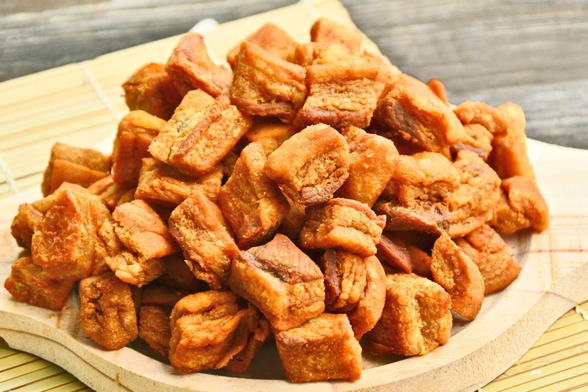

Sobre Euzinho
Home
Futuro
Comida
Curiosidades
Historia
Divertidamente
Torresmo

Ingredientes
1 kg de torresmo em cubos (panceta ou toicinho);
Sal;
1/2 copo de óleo.
Modo de Preparo
Tempere os torresmos com o sal e deixe descansar por uns 15 minutos.
Coloque um pouco de óleo numa panela e quando estiver quente, coloque os cubos do torresmo. Tampe a panela para não emporcalhar o fogão.
Com uma colher de pau vá mexendo de vez em quando para não grudar um torresmo no outro. Eles vão soltar mais gordura ainda e quando estiverem opacos, com cara de que estão fritos, desligue o fogo, retire daquela gordura os torresmos e coloque-os na geladeira para esfriar. Reserve a gordura.
Quando os mesmos estiverem frios (não gelados), esquente a gordura novamente e quando estiver frigindo, coloque de volta os torresmos e vá mexendo até eles pururucarem. Retire após e coloque em um recipiente com papel toalha.
Ficam tão sequinhos que quase nem sujam o papel toalha.
Comprove!
Comida